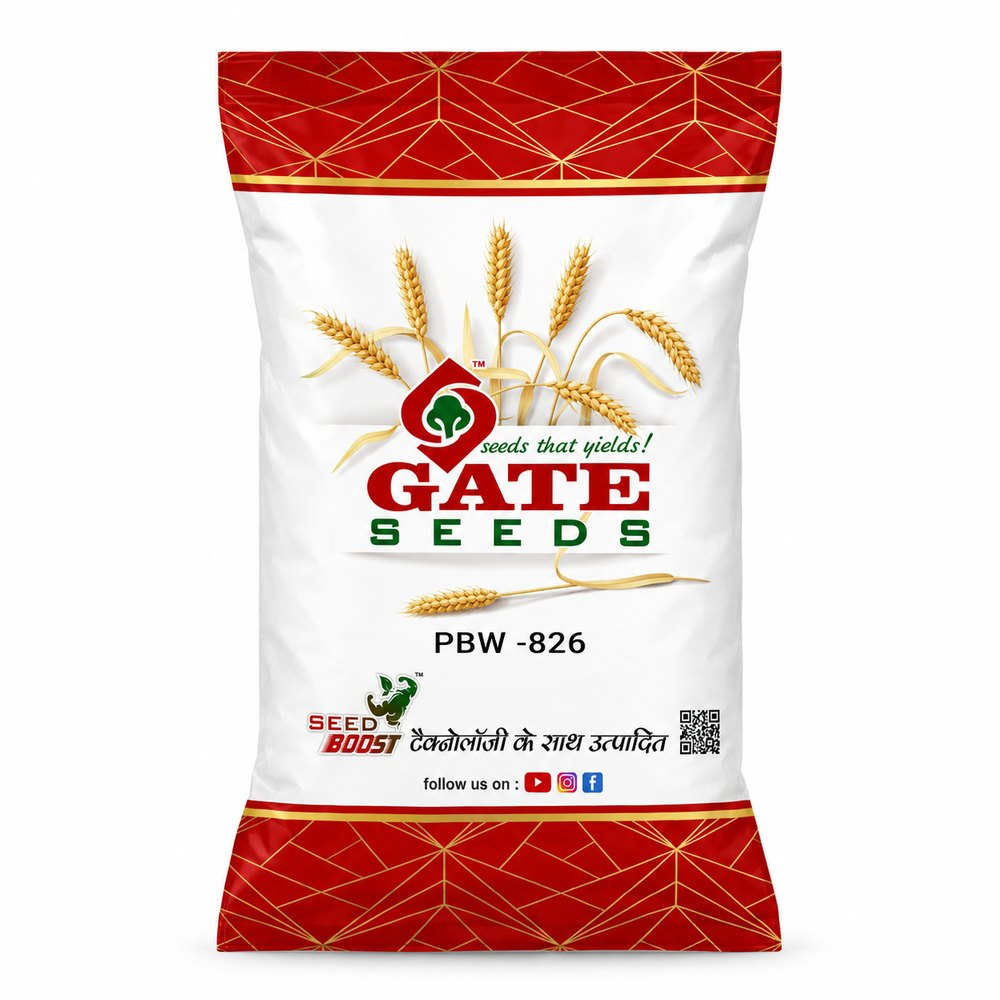
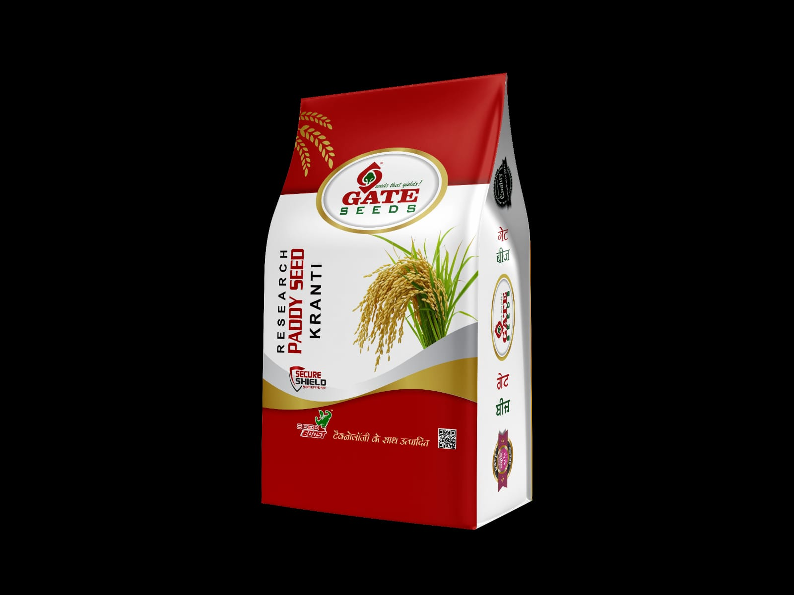

01 / WheatStrength in
Strength in
every sowing.
17 wheat varieties across PBW, DBW, WH and HD selections, including our proprietary GATE-71 research variety.
Explore wheat seeds17 varieties

Proven wheat and paddy varieties. Practical farming insight. Targeted innovation. Reliable genetics to protect farmer margins and build a season on.
See the complete variety catalogue and selected pack showcase on our Products page.

Rooted on the Rampura-Talwandi road in Maur Mandi, Gate Seeds has spent over two decades building a dependable crop portfolio focused on purity, presentation and field performance.
Wheat, short grain paddy, basmati, long grain and DSR options.
Our exclusive, internally developed paddy variety, engineered for peak productivity.
Proven, high-yielding PBW, DBW, WH and HD wheat varieties alongside our proprietary research development, GATE-71.
Dependable short grain, basmati, long grain and DSR choices, led by Kranti, our exclusive research paddy variety.
GATE-71 wheat and Kranti paddy bring practical farming insight together with targeted innovation for field performance.
A focus on seed purity, dependable genetics and clear presentation, supported by our Seed Boost™ and Secure Shield™ quality signatures.
29 wheat and paddy varieties. Proven genetics and proprietary research, brought together for dependable field performance.
Explore the complete catalogue17 wheat varieties across PBW, DBW, WH and HD selections, including our proprietary GATE-71 research variety.
Explore wheat seeds
12 paddy varieties spanning short grain, basmati, long grain and DSR, led by our exclusive research variety Kranti.
Explore paddy seeds
Hear farmers share their GateSeeds experience in their own words.
Real feedback from the farming community that works with GateSeeds season after season.
Follow @gateseedsVideos begin muted when this section enters view. Use the player controls to listen.
Share the crop, variety, quantity and location over WhatsApp, call or our contact form.
Our team responds with relevant variety and product information for your enquiry.
Variety, quantity, packaging and other requirement details are confirmed with our team.
Get the relevant next-step information for your confirmed seed requirement.